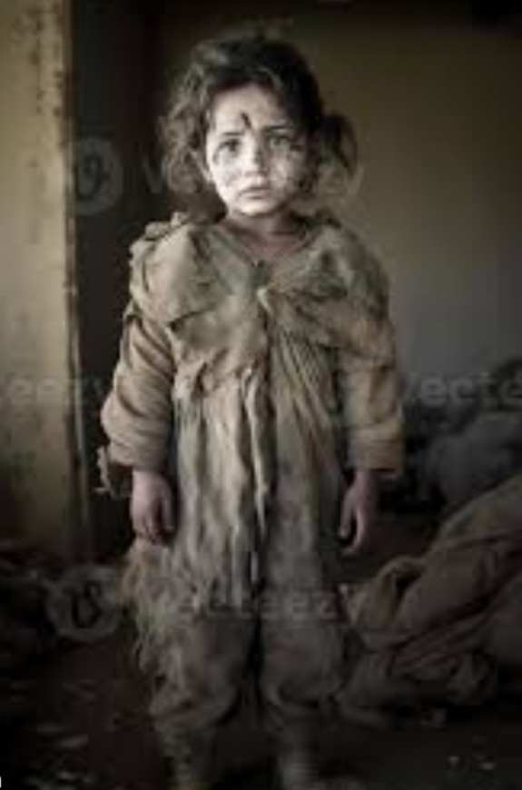

the existence of young AHMED unfolds as a harrowing chronicle of misery, cast adrift in the merciless currents of war. His parents, AAYSHA and KAREEM, were mere shadows in the desolate landscape, struggling to navigate a life devoid of hope amidst the ruins.
Aisha, a once-vibrant soul, now weathered by ceaseless hardship, and Kareem, a laborer broken by the weight of insurmountable challenges, epitomized the desolation that had befallen their war-ravaged home. Ahmed's childhood, once filled with the laughter of playmates, had become a relentless saga of deprivation.
Before the war, Ahmed's aspirations were modest - a full stomach, a roof over his head, and the chance to dream beyond the horizon. Yet, the unrelenting siege of conflict stripped even these humble ambitions away, leaving Ahmed teetering on the brink of despair.
The once lively streets, now strewn with remnants of destruction, bore witness to the torment etched on the faces of the inhabitants. The echoes of laughter had been replaced by the haunting sounds of desperation and sorrow, as families scavenged for the remnants of sustenance in a desolate wasteland.Orphaned and alone after her parents fell victim to an indiscriminate airstrike, Layla roamed the desolate streets with nothing but the tattered remnants of her former life. The makeshift shelters and makeshift communities that emerged in the aftermath offered little solace, as Layla faced the harsh reality of survival in a world stripped bare.
Layla's story serves as a poignant reminder of the countless children whose lives are defined by the harshness of war and the relentless struggle for survival. It beckons the world to confront the stark realities of widespread suffering, urging collective action to alleviate the plight of those trapped in the shadows of conflict, offering them a glimmer of hope amid the darkness.